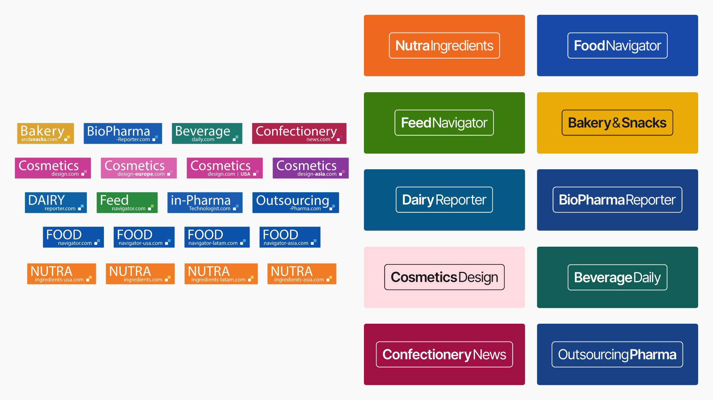
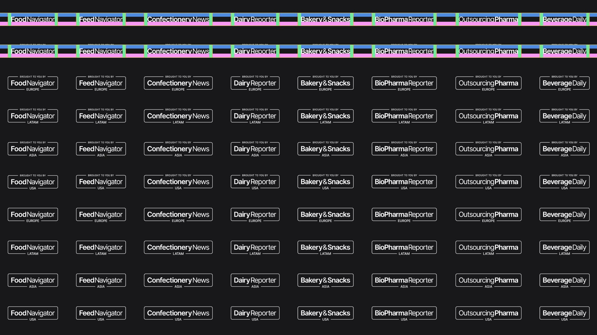
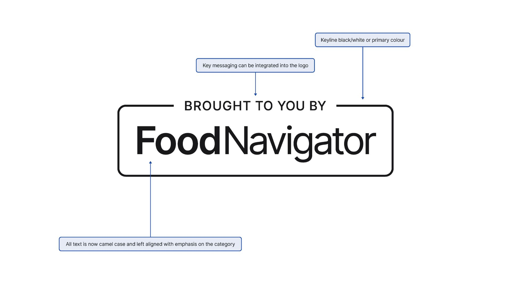
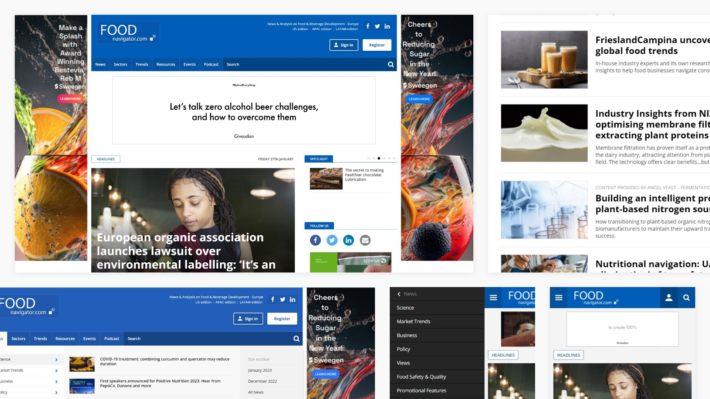
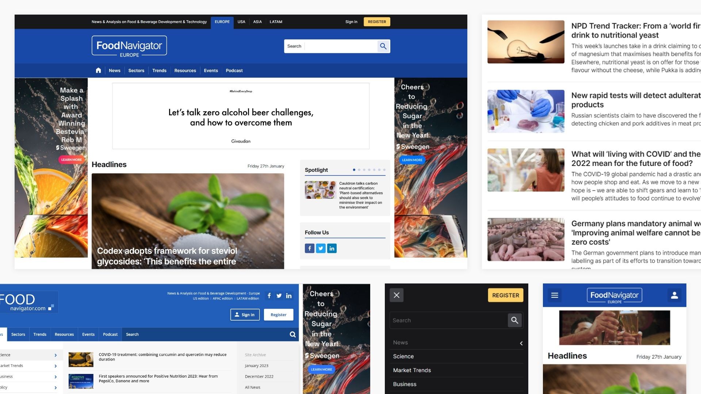
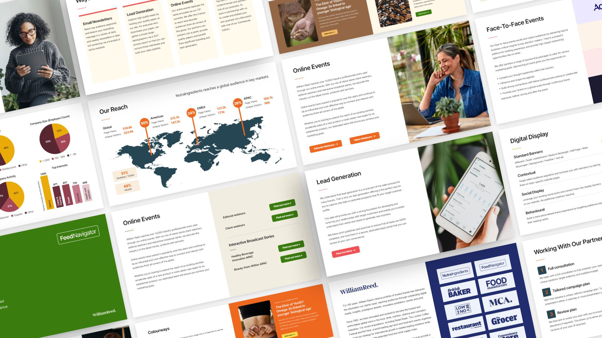
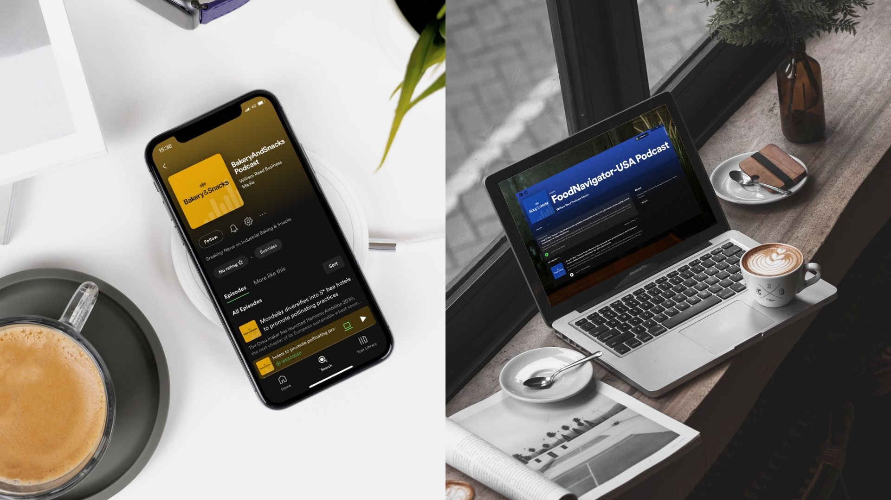
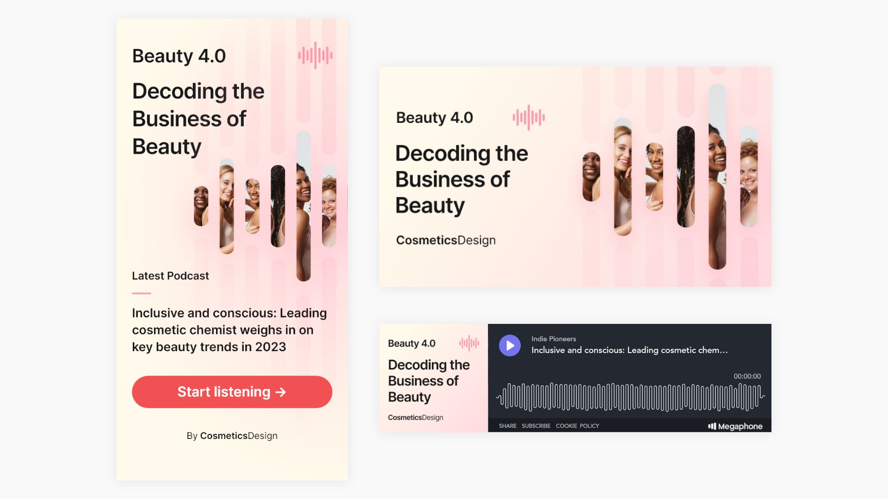

The Brief
Global Brands constitute a diverse group within William Reed, spanning across various industries such as food, drink, nutrition, agriculture, hospitality, and food manufacturing.
The challenge at hand was a comprehensive brand refresh encompassing 10 distinct brands. The overhaul included addressing issues in three key areas:
Logos
- Designing modern, contemporary, and consistent logos that could be seamlessly integrated across all brands and accommodate messaging variations.
- Rectifying the inconsistencies, readability issues, and outdated nature of the old logos (including unnecessary URLs).
- Standardising the use of upper- and lower-case styles for uniformity.
Before and After Logos
  Colours
- Crafting a new, revitalised colour palette for each brand.
- Ensuring tonal alignment for each brand's colour palette. Marrying together the collection of brands.
- Introducing new secondary and tertiary colours to enhance and elevate the overall brand aesthetics.
Brand Guidelines
A brand-new set of guidelines across all 10 brands, clearly outlining colour use, font implementation, imagery and logo variations.
Websites
- Implementing the freshly designed branding across all websites within the CMS 'Ez Platform'.
- Fine-tuning font sizes, line-heights, spacing, and overall CSS styling of the new font 'Inter'.
- Focusing on optimising the menu, website header, and internal templates for a consistent user experience across desktop, tablet, and mobile devices.
Before
After
Marketing Assets
As a pivotal aspect of the brand refresh initiative, we supplied an array of new marketing assets. This included redesigned newsletters, media packs, display ads, and sub-brand content.
  The overarching goal was to achieve continual improvement in the websites and marketing assets, with a specific focus on enhancing user engagement, increasing subscriptions, and creating new advertising opportunities. This holistic approach aimed to elevate the overall brand presence and resonance in the respective industries.